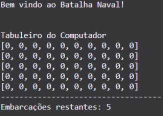

Olá! Meu nome é Ana Carolina Afonso e este é o meu portfólio do semestre, aqui você encontrará os trabalhos que foram realizado durante todo o primeiro período do curso de Ciência da Computação.
Dipper's Adventure
O Dipper's Adventure é um jogo de plataforma desenvolvido no Construct, nosso grupo foi dividido em: programador, artista gráfico, game designer, sound designer, redator e user interface designer. Desenvolvemos um jogo muito divertido e desafiador, em que o personagem Dipper Pines deverá coletar todos os diários perdidos e lutar contra o maior vilão do universo de Gravity Falls, o Bill Cipher!
Calculadora em Pyhton

O projeto teve como objetivo desenvolver uma calculadora em Python que realiza as quatro operações básicas (adição, subtração, multiplicação e divisão) através de um menu de opções. A calculadora permite que o usuário selecione a operação desejada e realize cálculos com dois valores. Implementamos um menu interativo usando um loop while para que o usuário possa escolher a operação e realizar quantas operações quiser, sem interrupção. O programa só encerra quando o usuário escolhe a opção 0.
Jokenpô
Desenvolvemos um programa de Jokenpô em Python que respeita as regras clássicas do jogo: Pedra ganha da tesoura, Tesoura ganha do papel, e Papel ganha da pedra. O jogo possui três modalidades: humano contra humano, humano contra computador, ou computador contra computador. A escolha da modalidade é definida no início do programa e não pode ser modificada durante a execução. Após a escolha da modalidade, o jogo permite inúmeras partidas consecutivas. Ao final de cada partida, o programa pergunta ao jogador se deseja continuar ou sair, permitindo que o jogo seja repetido quantas vezes o jogador quiser. Em cada partida, o programa solicita a jogada (Pedra, Papel ou Tesoura) se o jogador for humano, ou gera a jogada de forma randômica se o jogador for um computador. Após coletar as jogadas, o programa indica quem foi o vencedor daquela partida específica e atualiza o placar geral. Caso o jogador deseje continuar, o programa inicia uma nova partida. Caso o jogador deseje sair, o programa exibe o placar geral e apresenta uma mensagem de agradecimento com os nomes dos desenvolvedores do projeto. Essa abordagem garante que o jogador tenha um resumo claro de seu desempenho ao longo do jogo e uma conclusão satisfatória para a experiência de jogo. Com essas funcionalidades, o programa de Jokenpô em Python proporciona uma experiência de jogo completa e interativa, permitindo múltiplas partidas consecutivas e mantendo um placar atualizado, tudo dentro das regras clássicas do Jokenpô.
Batalha Naval em Python
Batalha Naval é um jogo de tabuleiro para dois jogadores cujo objetivo é afundar a frota de navios do adversário. Cada jogador tem um tabuleiro de 5x10 ou 10x10, onde posiciona secretamente suas embarcações. Os jogadores fazem jogadas alternadas, indicando coordenadas para atacar o tabuleiro inimigo. O jogo informa se o tiro acertou ou não, e o jogador que afundar primeiro todas as embarcações inimigas vence. Nesta versão simplificada, um jogador humano enfrenta o computador. Cada jogador posiciona 5 embarcações em um tabuleiro secreto e utiliza um segundo tabuleiro vazio para feedback. As coordenadas das embarcações do computador são definidas aleatoriamente. Durante o jogo, os ataques são registrados no tabuleiro visível, marcando "X" para acertos e "O" para erros. Mensagens informam os acertos e o número de embarcações restantes.